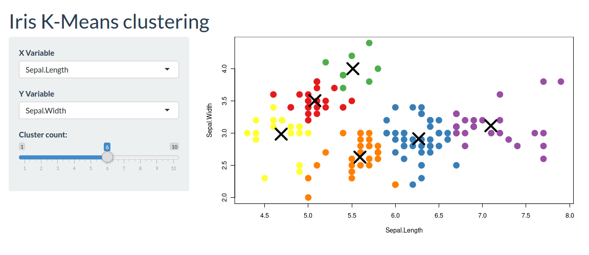

Shiny Server¶
Shiny allows you to build interactive web apps from R. This file explains how to run Shiny in CoCalc.
The general idea is the following: First, create the server and ui function. Then, instantiate the server and pass server and ui into it. The server will then call the ui part to layout the dynamic website and run the server part to define the behavior and dynamically update its elements if data changes.
Note
The CoCalc specific part is in the options list passed into the server.
You have to open up the app to outside traffic via list(host="0.0.0.0") and, for your convenience, specify a port.
It’s possible to either run this code in a standalone file, e.g. kmeans.r or evaluate this in a Jupyter Notebook.
- Create a new file
kmeans.r - Split the editor and open up a Linux Terminal in one frame – see Frame Editor for more information. This allows you to run the code from the command-line while also editing the code.
- Run the file via
Rscript kmeans.r - Open up the following website:
https://cocalc.com/[PROJECT_ID]/server/6969/. You have to replace thePROJECT_IDwith the one of your project and the number at the end has to match theport = ...option! The script below will print a link for you in the terminal.
#!/usr/bin/env Rscript
# code taken from https://github.com/rstudio/shiny-examples/tree/master/050-kmeans-example
require(shiny)
require(shinythemes)
cat(paste("shiny version", packageVersion("shiny")))
port = 6969
project_id <- Sys.getenv("COCALC_PROJECT_ID")
cat(paste("\n\nOpen the shiny app here: https://cocalc.com/", project_id, "/server/", port, "/\n\n", sep=""))
options(device.ask.default = FALSE)
opts <- list(host = "0.0.0.0", port = port)
server <- function(input, output, session) {
# Combine the selected variables into a new data frame
selectedData <- reactive({
iris[, c(input$xcol, input$ycol)]
})
clusters <- reactive({
kmeans(selectedData(), input$clusters)
})
output$plot1 <- renderPlot({
palette(c("#E41A1C", "#377EB8", "#4DAF4A", "#984EA3",
"#FF7F00", "#FFFF33", "#A65628", "#F781BF", "#999999"))
par(mar = c(5.1, 4.1, 0, 1))
plot(selectedData(),
col = clusters()$cluster,
pch = 20, cex = 3)
points(clusters()$centers, pch = 4, cex = 4, lwd = 4)
})
}
# k-means only works with numerical variables,
# so don't give the user the option to select
# a categorical variable
vars <- setdiff(names(iris), "Species")
ui <- fluidPage(
theme = shinytheme("flatly"),
headerPanel('Iris K-Means clustering'),
sidebarPanel(
selectInput('xcol', 'X Variable', vars, selected = vars[[1]]),
selectInput('ycol', 'Y Variable', vars, selected = vars[[2]]),
sliderInput("clusters", "Cluster count:", min = 1, max = 10, value = 3),
),
mainPanel(
plotOutput('plot1')
)
)
# The object can be passed to runApp()
app <- shinyApp(options = opts, ui = ui, server = server)
runApp(app)
If everything goes well, the website you open up should look like this:

{kind=link}